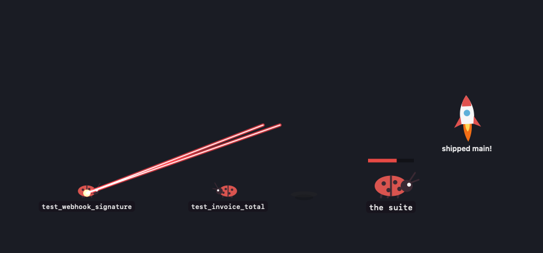
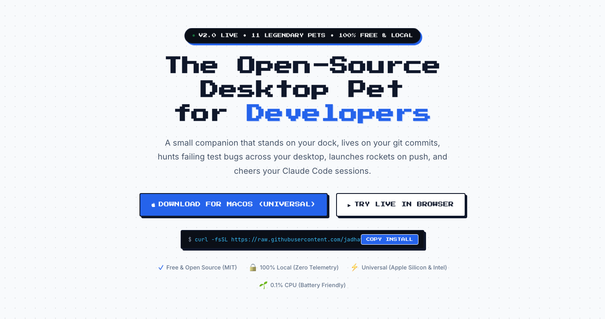

Bitling
A desktop pet for macOS that reacts to your work. It catches commits, celebrates pushes, shoots down failing tests and notices Claude Code sessions.
At Alsonotify, a Digibranders brand. I build AI products, agents and web apps in TypeScript and Python.


A desktop pet for macOS that reacts to your work. It catches commits, celebrates pushes, shoots down failing tests and notices Claude Code sessions.
A voice assistant that answers questions over your documents and uses tools. Every tool call passes a policy engine that can ask for human approval, and each step is traced.
SourceReads a public GitHub footprint and builds an engineering profile: an archetype, five scored dimensions and a deterministic visual seal, scored on the server.
SourceSearch images with a sentence or with another image. CLIP embeddings are stored in ChromaDB behind a FastAPI service, with a React front end.
SourceReal-time face recognition for attendance. YOLOv8 finds faces, sessions are logged to SQLite, and re-identification stops people being logged twice.
SourceIt is the thread through my work: SHAP and LIME on a classifier, MLflow and DVC on a CT model, an approval gate on every agent tool call.
April 2026 to now
Alsonotify is a Digibranders brand. I build web products and AI features, mostly in TypeScript and Python.
February to April 2025
Took a phishing detector from a raw dataset to a deployed Streamlit app with CI and data versioning.
June 2024 to June 2025
Four IBM courses along the way: Python for Data Science, Data Analysis with Python, Machine Learning with Python and Deep Learning with TensorFlow. Also Databricks Generative AI Fundamentals.
April 2024
"A Framework to Make Voting System Transparent Using Blockchain Technology", Volume 10, Issue 01. DOI
2024
The final-year project became the paper above.
Open source runs alongside my main work. Every row links to the pull request on GitHub, and the list rebuilds each day.